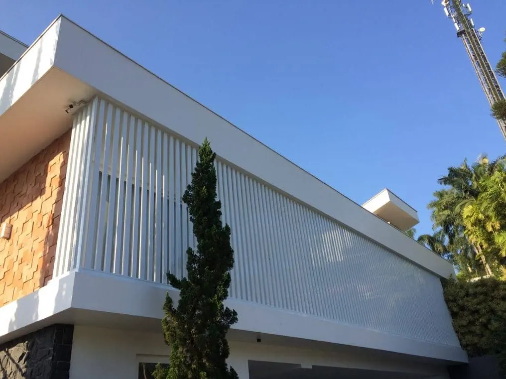
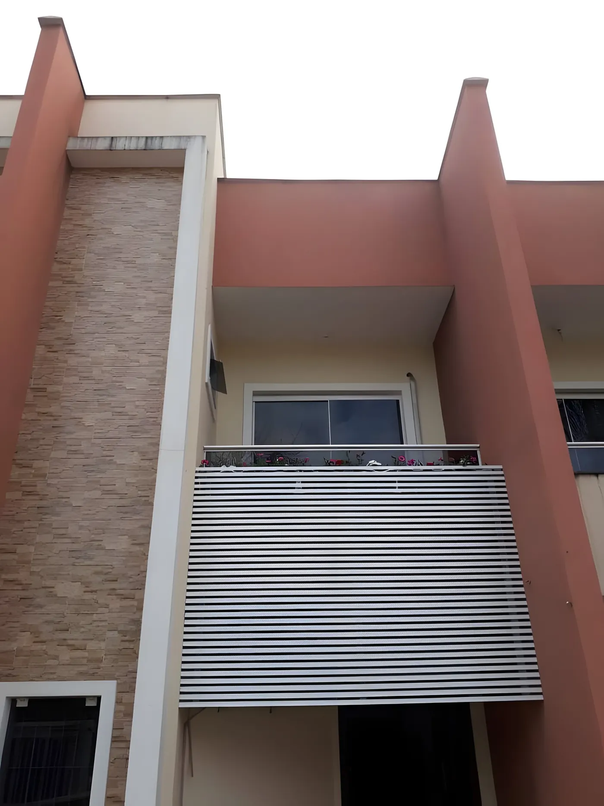

Esquadrias de alumínio e de ferro
Janelas e portas em diversas cores e acabamentos, com opção de vidros duplos ou especiais. Em Joinville, onde a umidade é um desafio, o alumínio não enferruja e pede pouca manutenção.
Ver esquadrias

Brises na fachadaBrise na sacada